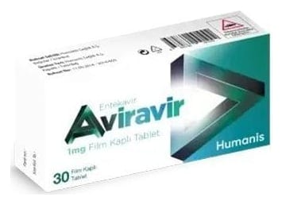

Aviravir 1 mg Film Kaplı Tablet ,30 Adet

Ne için kullanılır
KT · Bölüm 1AVİRAVİR antiviraller olarak adlandırılan bir ilaç grubuna dahildir. AVİRAVİR, erişkinlerde hepatit B virüsü (HBV) enfeksiyonunun tedavisinde kullanılır.
AVİRAVİR karaciğeri hasar görmüş fakat halen düzgün şekilde işlev gösteren (kompanse karaciğer hastalığı) kişilerde ve karaciğeri hasar görmüş ve düzgün şekilde işlev göstermeyen (dekompanse karaciğer hastalığı) kişilerde kullanılabilir.
AVİRAVİR ayrıca vücut ağırlığı en az 32,6 kg olan çocuklar ve ergenlerde kronik (uzun süreli) HBV enfeksiyonunu tedavi etmek için kullanılır. AVİRAVİR, karaciğeri hasar görmüş ancak hala düzgün çalışan (kompanse karaciğer hastalığı) çocuklarda kullanılabilir.
AVİRAVİR 1 mg Film Tabletlerin her biri etkin madde olarak 1 mg entekavir içerir.
Bu ilacı kullanmaya başlamadan önce bu KULLANMA TALİMATINI dikkatlice okuyunuz, çünkü sizin için önemli bilgiler içermektedir. • Bu kullanma talimatını saklayınız. Daha sonra tekrar okumaya ihtiyaç duyabilirsiniz. • Eğer ilave sorularınız olursa, lütfen doktorunuza veya eczacınıza danışınız. • Bu ilaç kişisel olarak sizin için reçete edilmiştir, başkalarına vermeyiniz. • Bu ilacın kullanımı sırasında, doktora veya hastaneye gittiğinizde, doktorunuza bu ilacı kullandığınızı söyleyiniz. • Bu talimatta yazılanlara aynen uyunuz. İlaç hakkında size önerilen dozun dışında yüksek veya düşük doz kullanmayınız.
Laktoz monohidrat inek sütü kaynaklıdır.
AVİRAVİR 1 mg Film Tablet, pembe, üçgen, film kaplı tabletler halindedir. Her kutuda 30 tablet vardır.
AVİRAVİR, erişkinlerde hepatit B virüsü (HBV) enfeksiyonunun tedavisinde kullanılır.
Hepatit B virüsünün neden olduğu enfeksiyon, karaciğerinize zarar verebilir. AVİRAVİR vücudunuzdaki virüs miktarını azaltır ve karaciğerinizin durumunu iyileştirir.